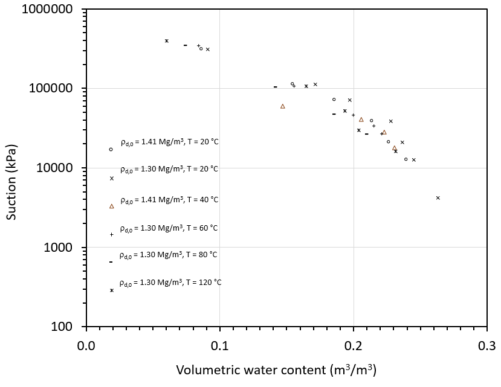
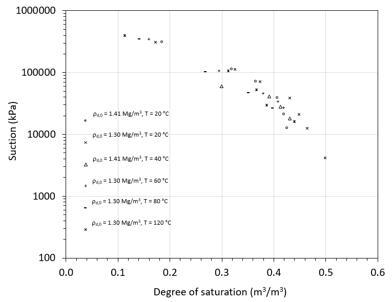
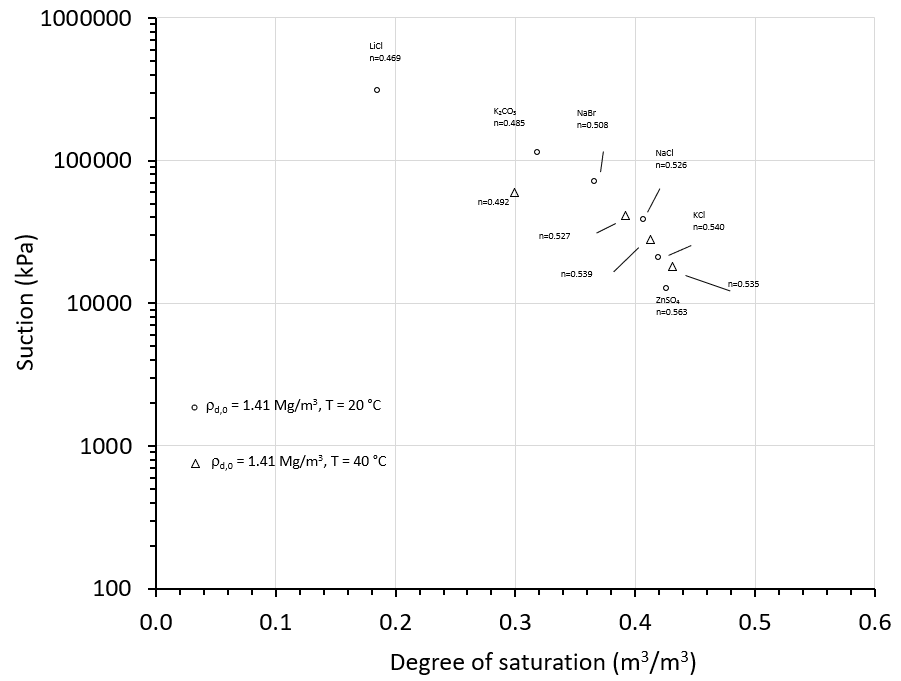
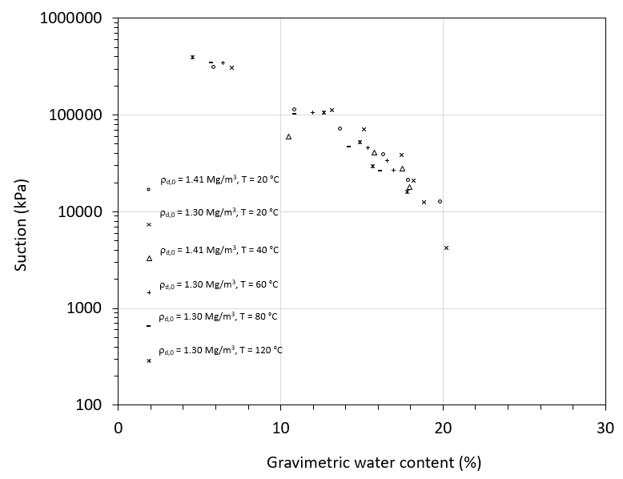

Tank-scale tests
Plots and notes for the final heating increase showing the first ~3770 hours pulled on 2026-06-30.
Update summary
The heater increase was successful, and the data show the first 7 days after the heat increase. I changed the dielectric sensor data from logarithmic to linear to show the recent changes over the past week. Both saturation and volumetric water content appear to have recently begun a steady path post-increase. I will post the newly updated section next week. The hydration equipment is ready and on standby for whenever we are ready to move forward.


Manual data corrections
Manual corrections for heater, thermocouple, and RH sensor artifacts.
Update summary
During the initial 30 minutes of the heater increase, the readings across two thermocouples and the values from both the heater core and heater surface were somewhat rugged due to instrumental variation. I ended up manually correcting these values by making edits in the Excel sheets and applying a corrective filter that tied the skewed data back to readings known to be correct at the beginning and end of that window. I also corrected the issues I mentioned in my last update for the bottom-center thermocouple and the RH reading. These edits are shown in the plots below for the corrected windows.


Relative humidity tests
Requested plots and ongoing progress
I found a total of six papers, and I am currently reviewing and digitizing them to establish a baseline of all the publicly available data I can find from non-isothermal tests of the salts I have already begun testing on. Once the new RH sensor comes in, I will use this data to guide where I need to pull values from first. I have also begun making specimens at different densities to add to a new volumetric test with pure water. I will start this by the end of the week after more trial and error with getting the correct height in the load frame, which is currently ongoing as of today (7/1).




Future work
Running list of next steps.
Future work summary:
- Continue research and development of the correct non-isothermal Lu & McCartney (2024) SWRCs.
- Continue monitoring the tank after the heater increase.
- Finish plotting all salt-suction data from the literature review.
- Plot the thermal conductivity data from the Meter sensors.